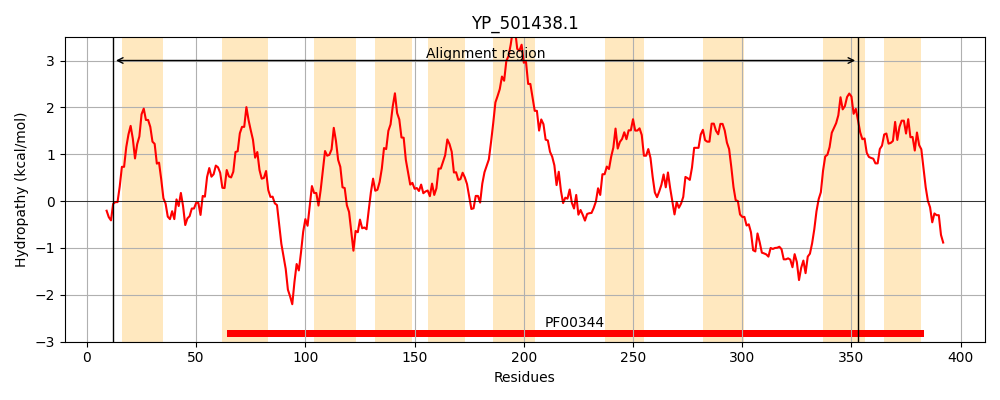
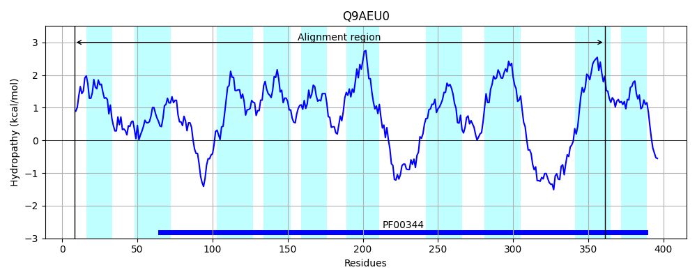
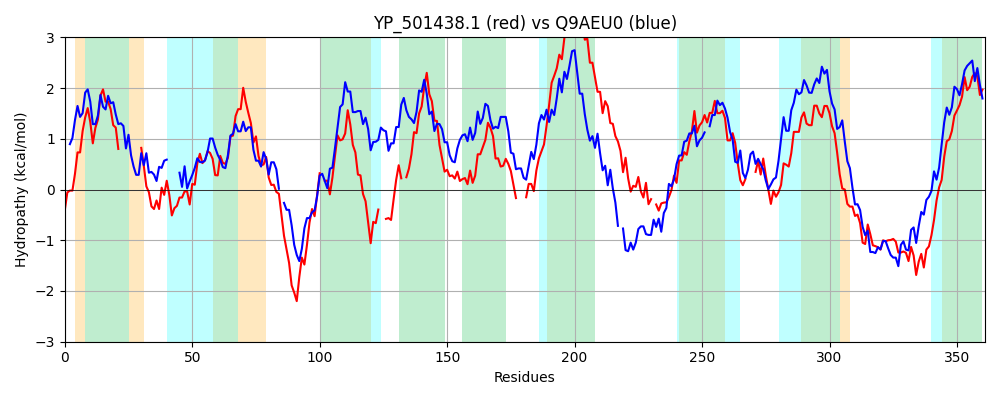

Hit Accession: Q9AEU0
Hit TCID: 3.A.5.10.1
Hit Description: gnl|BL_ORD_ID|17728 gnl|TC-DB|Q9AEU0|3.A.5.10.1 SecY-like protein - Streptococcus gordonii.
Mach Len: 361
e:0.000000
Query TMS Count : 10
Hit TMS Count: 10
TMS-Overlap Score: 6.800000
Predicted Substrates:None
BLAST Alignment:
Score: 332 , Bit scores: 132 bits, E-value: 8.8e-35, Alignment length: 361, Percentage identity: 27
Query: 12 IIYKRMLYTCFILFIYILGTNI--------SIVSYNDMQVKHESFFKIAISNMGGDVNTLNIFTLGLGPWLTSMIILMLISYRNMDKYMKQTSLEKHYKER-ILTLILSVIQSYFVIHEYVSKE--RVHQDNI-YLTILILVTGTMLLVWLADKNSRYGIAGPMPIVMVSIIKSMMHQ---KMEYIDASHIVIALLIILVIITLFILLFIELVEVRIPYIDLMNVSATNMK-SYLSWKVNPAGSITLMMSISAFVFLKSGIHFILSMF---NKSISDDMPMLTFDSPVGISVYLVIQMLLGYFLSRFLINTKQKSKDFLKSGNYFSGVKPGKDTERYLNYQARRVCWFGLALVTVIIGIPL 353
+I K+ L+T +FIY+LG+ + SI N V A + MGG++ +++ F++GL PW++S++I + + + + S+E K R +LTL +++IQS ++ K V Q I +L LIL+ GT L+WL D NS G+ G + IVMVS+I + ++ + S +++AL+ + L++ + +E + RIP I+ +N+ K SYL +VN AG + +M +++ V + +L F N+ + + + L +YL+ +L + + +N+ Q ++ +SG Y + PG+ T RY++ + G + ++ G+P+
Sbjct: 8 LILKKFLWTLLFVFIYVLGSKLTLPFVDVSSIAKLNGDSVT----LNYAAALMGGNLRSMSFFSIGLAPWMSSILIWQMFTVSKR-LGLNKLSMESQEKRRMLLTLAIALIQSLGLVLNLPLKTVAGVGQGTIVFLDTLILIAGTYFLIWLTDLNSSMGLGGSIMIVMVSMISYIPQDIWLSIQELKISPLILALIGFFSLCFLYLAVLVERAKYRIP-INKINIHNRFKKYSYLDIRVNAAGGLPIMYAMT-LVSIPQYFLMLLLFFQPNNRLLKEGILSLAMGGIPWFILYLLTIFILAWAFAFINVNSDQIAERMQRSGEYIENLYPGEATRRYIHKTVGYFAFVGALYLVLVAGLPM 361 | Protein Hydropathy Plots: |
|---|
|  |  |
Pairwise Alignment-Hydropathy Plot:
|
|---|
|  |